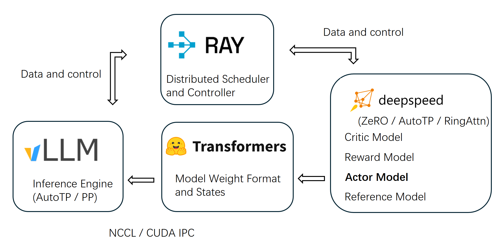

Architecture Foundation: Ray + vLLM Distribution
OpenRLHF is built on a Ray + vLLM distributed architecture, orchestrating multiple components across GPUs efficiently. The framework cleanly separates concerns: Ray handles distributed scheduling, vLLM handles high-throughput generation, and DeepSpeed handles memory-efficient training, all working with native HuggingFace models.
{kind=link}

Why this matters
RLHF training spends roughly 80% of wall-clock time on sample generation. A naive setup would dedicate separate GPUs to generation and training, leaving each idle for most of the time. OpenRLHF avoids this in two ways:
Distributed mode: Actor / Reward / Reference / Critic models and vLLM engines are placed on different GPUs and pipelined. This scales to 70B+ parameter models.
Hybrid Engine mode (recommended for most workloads): all models and vLLM engines colocate on the same GPUs and use sleep mode to free memory between phases (see Hybrid Engine).
Core infrastructure components
Ray — Distributed scheduler and controller
OpenRLHF uses Ray for distributed scheduling. It separates the Actor, Reward, Reference, and Critic models across different GPUs (or colocates them via Hybrid Engine), enabling scalable training for models up to 70B+ parameters. Ray placement groups make it easy to specify per-model GPU resources, and Ray jobs let you submit a training run from any node in the cluster.
vLLM — High-performance inference engine
vLLM provides high-throughput, memory-efficient generation through PagedAttention, continuous batching, prefix caching, and CUDA graphs. OpenRLHF integrates vLLM with Auto Tensor Parallelism (AutoTP) and Pipeline Parallelism (PP), so a single rollout can be sharded across multiple GPUs without changing the training loop.
Weight sync between the trainer and vLLM uses NCCL (--vllm.sync_backend nccl) for low-latency updates after each training step.
DeepSpeed — Memory-efficient training
Training uses DeepSpeed ZeRO-3 to shard optimizer state, gradients, and parameters across GPUs. Optional features:
deepcompile — graph compilation (
--ds.deepcompile).AutoTP — DeepSpeed tensor parallelism (
--ds.tensor_parallel_size).RingAttention for long contexts (
--ds.ring_attn_size; see Sequence Parallelism (RingAttention)).Optimizer choice — Adam (default) or Muon via
--optim muon(single-model trainers) /--actor.optim muon(PPO). Requires DeepSpeed ≥ 0.18.2 and is incompatible with--ds.adam_offload.
The result: large-model training works directly from HuggingFace checkpoints — no model conversion, no custom training framework.
Transformers — Model interface
Native integration with HuggingFace Transformers for model loading, state management, and fine-tuning. VLMs (Vision-Language Models) are auto-detected via the vision_config field and loaded with AutoModelForImageTextToText (see RL Training Guide).
NCCL / CUDA IPC — High-speed communication
Inter-GPU communication uses NCCL for collective ops and CUDA IPC for intra-node weight transfer. This keeps the cost of weight sync, gradient reduce, and KV-cache movement low even at 70B scale.
Execution-time design principles
On top of the static component layout above, OpenRLHF schedules when each component runs in order to maximize GPU utilization. Two complementary mechanisms are built in — both are first-class features and configurable per run:
Hybrid Engine (sleep-mode time-sharing)
Without sharing, vLLM idles during training and DeepSpeed idles during generation — wasting roughly half the GPU clock. The Hybrid Engine solves this by colocating Actor / Critic / Reward / Reference and vLLM on the same GPUs and time-slicing them via sleep mode:
During the generation phase, vLLM is awake and DeepSpeed engines are asleep.
After weight sync (NCCL), vLLM goes to sleep and DeepSpeed wakes for training.
Both sides know how to release memory between phases, so they can fit on one GPU set even at large model sizes.
Trigger flags: --train.colocate_all --vllm.enable_sleep --ds.enable_sleep. This is the
recommended default on any cluster where memory permits. See Hybrid Engine for the full
configuration and tuning notes.
Async + Partial Rollout (concurrent pipeline)
Async mode runs rollout and training concurrently instead of alternating:
--train.async_enableoverlaps the two phases through a bounded queue (--train.async_queue_size).--train.partial_rollout_enablegoes further — vLLM never fully stops; on weight sync it pauses the in-flight requests, swaps weights, and resumes. Generation overlaps with weight broadcast at the cost of slight off-policy noise (in-flight samples mix old and new weights).
Async pipelines deliver the highest throughput and pair naturally with off-policy correction
(--algo.advantage.is_correction_enable --algo.advantage.is_correction_type icepop). They are
mutually exclusive with vLLM sleep mode, but can still colocate the DeepSpeed models. See
Async Training & Partial Rollout.
Key benefits
Scalability — train models up to 70B+ parameters efficiently.
Efficiency — vLLM-accelerated generation eliminates the dominant RLHF bottleneck.
Flexibility — Hybrid Engine shares GPUs to avoid resource idling on small clusters; distributed mode scales out for large models; async + partial rollout maximizes overlap when throughput is critical.
Compatibility — native HuggingFace model integration; no custom checkpoint format.
Production-ready — NCCL-backed weight sync, full checkpoint / resume, best-checkpoint tracking, EMA, multi-node SLURM, comprehensive logging.
See Design Paradigm: Agent-Based Execution for how these pieces tie together into the unified training pipeline.